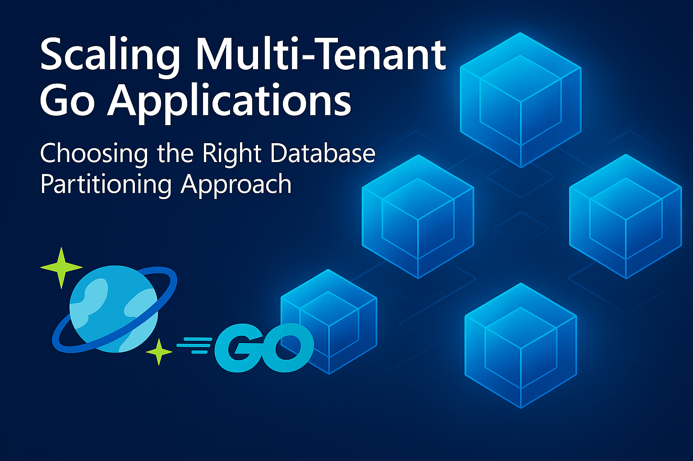

Scaling multi-tenant Go applications: Choosing the right database partitioning approach

Multi-tenant applications face a fundamental challenge: how to efficiently store and query data for tenants of vastly different sizes? Consider the typical scenario where your platform serves both enterprise clients with hundreds of thousands of users, as well as small businesses with just a handful. With traditional database partitioning strategies you are likely to run into these common issues:
- Partition imbalance: Large tenants create oversized partitions while small tenants waste allocated resources
- Hot partitions: High-activity tenants overwhelm individual database partitions, creating performance bottlenecks
- Inefficient queries: User-specific lookups require scanning entire tenant datasets
- Resource contention: Mixed workloads compete for the same database resources
Azure Cosmos DB has been a go-to solution for multi-tenant applications due to its global distribution, automatic scaling, and flexible data models. Its partition-based architecture naturally aligns with tenant isolation requirements, making it attractive for SaaS platforms, IoT applications, and content management systems.
However, even with these capabilities, the fundamental multi-tenant partitioning challenges persist. Let’s examine how these issues manifest specifically in a Cosmos DB context.
This blog post explores an approach to solving multi-tenant scaling challenges in Go applications using Azure Cosmos DB. You’ll learn how to implement this using the Go SDK for Azure Cosmos DB, focusing on how to achieve efficient data distribution and query performance.
Check the GitHub repository for the code examples used in this blog
Challenges with a multi-tenant SaaS solution
Imagine you’re building a multi-tenant SaaS platform that manages user sessions and activities across different organizations using Cosmos DB. In such a setup, tenant variability is a significant challenge. Enterprise clients may have over 50,000 users generating millions of session events, while small businesses might only have 10 to 50 users with minimal activity. Mid-market companies typically fall in between, with 500 to 5,000 users and moderate usage. This wide range of tenant sizes and activity levels creates unique challenges for data partitioning and resource allocation in the database.
This is how you might define your user session data model using a single partition key:
type UserSession struct {
ID string `json:"id"`
TenantID string `json:"tenantId"` // Single partition key
UserID string `json:"userId"`
SessionID string `json:"sessionId"`
Activity string `json:"activity"`
Timestamp time.Time `json:"timestamp"`
}This approach has several challenges. First, partition size imbalance occurs as enterprise tenants generate massive 20GB+ partitions, while small tenants use minimal storage, resulting in uneven resource utilization across physical partitions. Second, hot partition bottlenecks can develop when large tenants reach the 10,000 RU/s physical partition limit during peak usage periods. Third, user queries become inefficient because looking up individual user sessions requires scanning entire tenant partitions, which consumes unnecessary Request Units. Cross-tenant analytics also suffer, as queries spanning multiple tenants become expensive cross-partition operations.
Hierarchical Partition Keys to the rescue
Hierarchical partition keys (HPKs) help implement subpartitioning that allows you to define up to three levels of partition key hierarchy. This leads to better data distribution and query routing compared to traditional single-level partitioning. Instead of forcing all tenant data into a single partition boundary, you are able to create logical subdivisions that align with your actual access patterns.
Mapping this to the the multi-tenant solution challenges, hierarchical partition keys allow you to define a three-level partitioning scheme:
- Level 1: Primary partition key (e.g.,
tenantId) - provides tenant isolation - Level 2: Secondary partition key (e.g.,
userId) - distributes data within tenants - Level 3: Tertiary partition key (e.g.,
sessionId) - provides fine-grained distribution
This creates a logical partition path like instead of just ["Enterprise-Corp"]. Large tenants can be subdivided by user and session, eliminating hot partitions. Instead of one massive “Enterprise-Corp” partition, you get manageable partitions like: ["Enterprise-Corp", "user-1001", "session-abc123"], ["Enterprise-Corp", "user-1002", "session-def456"], etc.
Now, we can refactor the user session data model as such:
type UserSession struct {
ID string `json:"id"`
TenantID string `json:"tenantId"` // Level 1: Tenant isolation
UserID string `json:"userId"` // Level 2: User distribution
SessionID string `json:"sessionId"` // Level 3: Session granularity
Activity string `json:"activity"`
Timestamp time.Time `json:"timestamp"`
}Your queries can now be efficiently routed to only the subset of physical partitions that contain the relevant data. Specifying the full or partial subpartitioned partition key path effectively avoids a cross-partition query across all the parititions, which is a common problem with single partition keys.
- Session details:
WHERE tenantId = 'Enterprise-Corp' AND userId = 'user-1001' AND sessionId = 'session-abc123'provides single-partition access - User-specific queries:
WHERE tenantId = 'Enterprise-Corp' AND userId = 'user-1001'pinpoints exact data location - Tenant-wide queries:
WHERE tenantId = 'Enterprise-Corp'only targets relevant partitions
Each logical partition (tenant-user-session combination) can scale independently, allowing tenant data to exceed the traditional 20GB limit and maintain optimal performance. Targeted queries consume fewer Request Units by avoiding unnecessary cross-partition scans, directly reducing operational expenses.
Hierarchical Partition Keys in action with the Go SDK for Azure Cosmos DB
To explore the concepts, we will use a Go application that loads sample user session data into Azure Cosmos DB and queries it using the hierarchical partition keys.
Load data into Cosmos DB
Run the loader to populate the database with sample data that uses hierarchical partition keys. Its a CLI application that generates user session data for users in different tenant types (Enterprise, Mid-market, Small business) and inserts it into the Cosmos DB container.
Clone the repository and change into the load directory:
git clone https://github.com/abhirockzz/cosmosdb-go-hierarchical-partition-keys
cd cosmosdb-go-hierarchical-partition-keys/loadBuild the data loader application and run it. The database and container will be created automatically if they do not exist.
go build -o data-loader main.go
./data-loader -rows 100 -database <insert database name> -container <insert container name> -endpoint "https://your-account.documents.azure.com:443/"Here is how the container is created with hierarchical partition keys:
//...
partitionKeyDef := azcosmos.PartitionKeyDefinition{
Kind: azcosmos.PartitionKeyKindMultiHash,
Version: 2, // Version 2 is required for hierarchical partition keys
Paths: []string{
"/tenantId", // Level 1: Tenant isolation
"/userId", // Level 2: User distribution
"/sessionId", // Level 3: Session granularity
},
}
// Create container properties
containerProperties := azcosmos.ContainerProperties{
ID: containerName,
PartitionKeyDefinition: partitionKeyDef,
}
// Create container with 400 RU/s throughput
throughputProperties := azcosmos.NewManualThroughputProperties(400)
_, err = databaseClient.CreateContainer(ctx, containerProperties, &azcosmos.CreateContainerOptions{
ThroughputProperties: &throughputProperties,
})
//....… and this is how sample data is added:
// Create hierarchical partition key (TenantID, UserID, SessionID)
partitionKey := azcosmos.NewPartitionKeyString(session.TenantID).
AppendString(session.UserID).
AppendString(session.SessionID)
// Insert the record using UpsertItem (insert or update if exists)
_, err = containerClient.UpsertItem(ctx, partitionKey, sessionJSON, nil)Lets dive into the queries that demonstrate how to retrieve data using hierarchical partition keys.
Query patterns
Let’s examine how different query patterns perform with hierarchical partition keys. To execute these examples, you can comment out the relevant sections in the main function of the query/main.go file, set the required environment variables, and run the application.
export COSMOS_DB_ENDPOINT=https://your-account.documents.azure.com:443/
export COSMOS_DB_DATABASE_NAME=<insert database name>
export COSMOS_DB_CONTAINER_NAME=<insert container name>
cd cosmosdb-go-hierarchical-partition-keys/query
go run main.go1. Point Read (Most Efficient)
This is the most efficient query type, where you retrieve a single item using its unique ID and full partition key path. This avoids any cross-partition overhead.
Take a look at the executePointRead function that performs a point read operation:
func executePointRead(id, tenantId, userId, sessionId string) {
// Create a partition key using the full partition key values
pk := azcosmos.NewPartitionKeyString(tenantId).AppendString(userId).AppendString(sessionId)
// Perform a point read operation
resp, err := container.ReadItem(context.Background(), pk, id, nil)
if err != nil {
log.Fatalf("Failed to read item: %v", err)
}
var queryResult QueryResult
err = json.Unmarshal(resp.Value, &queryResult)
//.....
}2. Session-Specific Data
This is routed to the single logical and physical partition that contains the data for the specified values of tenantId, tenantId, and sessionId.
func queryWithFullPartitionKey(tenantID, userID, sessionID string) {
query := "SELECT * FROM c WHERE c.tenantId = @tenantId AND c.userId = @userId AND c.sessionId = @sessionId"
pkFull := azcosmos.NewPartitionKeyString(tenantID).AppendString(userID).AppendString(sessionID)
pager := container.NewQueryItemsPager(query, pkFull, &azcosmos.QueryOptions{
QueryParameters: []azcosmos.QueryParameter{
{Name: "@tenantId", Value: tenantID},
{Name: "@userId", Value: userID},
{Name: "@sessionId", Value: sessionID},
},
})
for pager.More() {
page, err := pager.NextPage(context.Background())
if err != nil {
log.Fatal(err)
}
for _, _item := range page.Items {
var queryResult QueryResult
err = json.Unmarshal(_item, &queryResult)
// log the results
}
}
}3. User-Specific Data (Targeted Cross-Partition)
This query is a targeted cross-partition query that returns data for a specific user in the tenant and routed to specific subset of logical and physical partition(s) that contain data for the specified values of tenantId and userId.
func queryWithTenantAndUserID(tenantID, userID string) {
query := "SELECT * FROM c WHERE c.tenantId = @tenantId AND c.userId = @userId"
// since we don't have the full partition key, we use an empty partition key
emptyPartitionKey := azcosmos.NewPartitionKey()
pager := container.NewQueryItemsPager(query, emptyPartitionKey, &azcosmos.QueryOptions{
QueryParameters: []azcosmos.QueryParameter{
{Name: "@tenantId", Value: tenantID},
{Name: "@userId", Value: userID},
},
})
for pager.More() {
page, err := pager.NextPage(context.Background())
if err != nil {
log.Fatal(err)
}
fmt.Println("==========================================")
for _, _item := range page.Items {
var queryResult QueryResult
err = json.Unmarshal(_item, &queryResult)
// log the results
}
}
}4. Tenant-Wide Data (Efficient Cross-Partition)
This query is a targeted cross-partition query that returns data for all users in a tenant and routed to a specific subset of logical and physical partition(s) that contain data for the specified value of tenantId.
The queryWithSinglePKParameter is a function that lets you query with a single partition key parameter - this can be either tenantId, userId, or sessionId.
func queryWithSinglePKParameter(paramType, paramValue string) {
if paramType != "tenantId" && paramType != "userId" && paramType != "sessionId" {
log.Fatalf("Invalid parameter type: %s", paramType)
}
query := fmt.Sprintf("SELECT * FROM c WHERE c.%s = @param", paramType)
emptyPartitionKey := azcosmos.NewPartitionKey()
pager := container.NewQueryItemsPager(query, emptyPartitionKey, &azcosmos.QueryOptions{
QueryParameters: []azcosmos.QueryParameter{
{Name: "@param", Value: paramValue},
},
})
for pager.More() {
page, err := pager.NextPage(context.Background())
if err != nil {
log.Fatal(err)
}
fmt.Printf("Results for %s: %s\n", paramType, paramValue)
fmt.Println("==========================================")
for _, _item := range page.Items {
var queryResult QueryResult
err = json.Unmarshal(_item, &queryResult)
// log the results
}
}
}5. User or Session Across All Tenants (Fan-Out)
Both types of queries will be routed to all physical partitions, resulting in a fan-out cross-partition query.
SELECT * FROM c WHERE c.userId = 'user-1001'
SELECT * FROM c WHERE c.sessionId = 'session-abc123'This type of query is not efficient and should be avoided in production scenarios. It is included here for completeness, but you should design your application to avoid such queries whenever possible.
Conclusion
Multi-tenant applications face inherent scaling challenges with traditional single-level partitioning: tenant size variability, hot partitions, and inefficient query patterns that impact both performance and cost. Hierarchical partition keys in Azure Cosmos DB address these issues by enabling intelligent data distribution across multiple partition levels, maintaining tenant isolation while achieving better resource utilization. By aligning your partition strategy with actual access patterns, you can build applications that scale naturally with tenant growth while maintaining predictable performance characteristics.
Check out the documentation for the azcosmos package (Go SDK). For more information on hierarchical partition keys, refer to the official documentation.